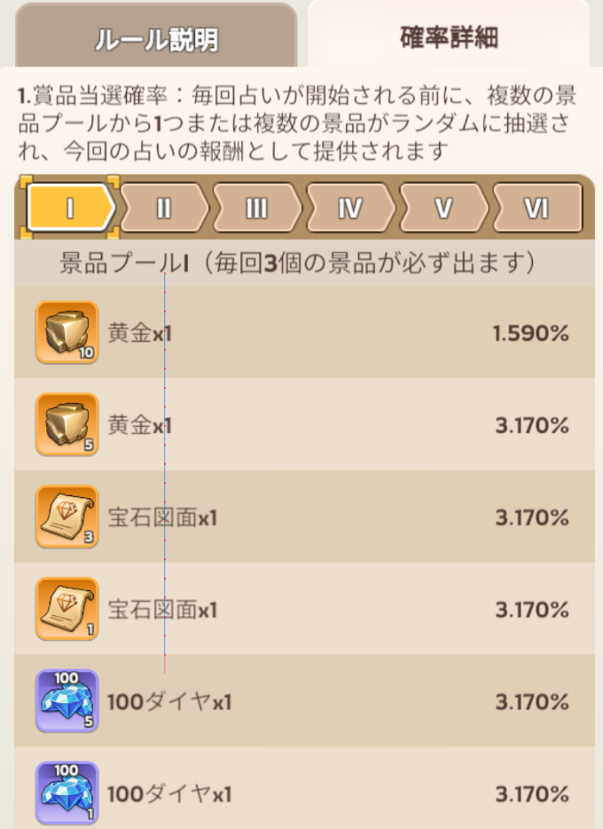
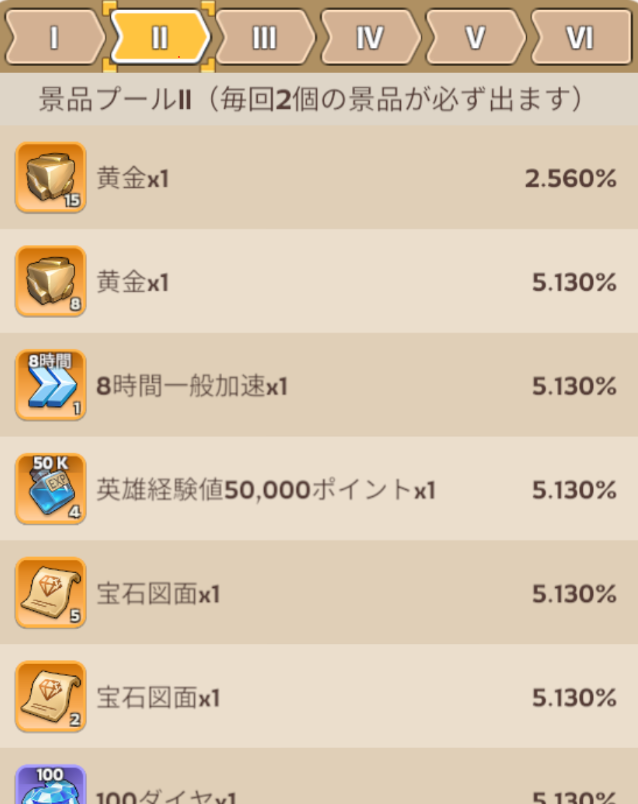
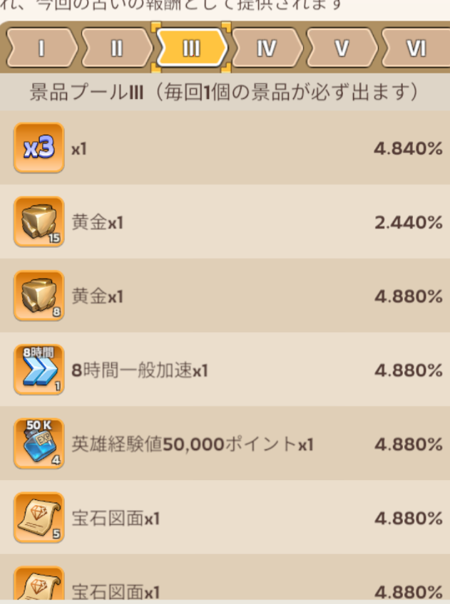
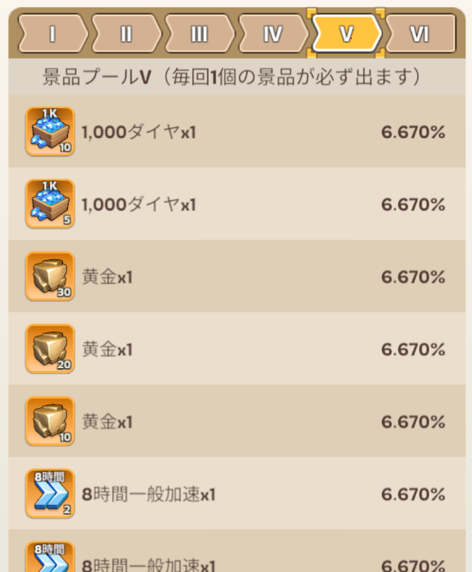
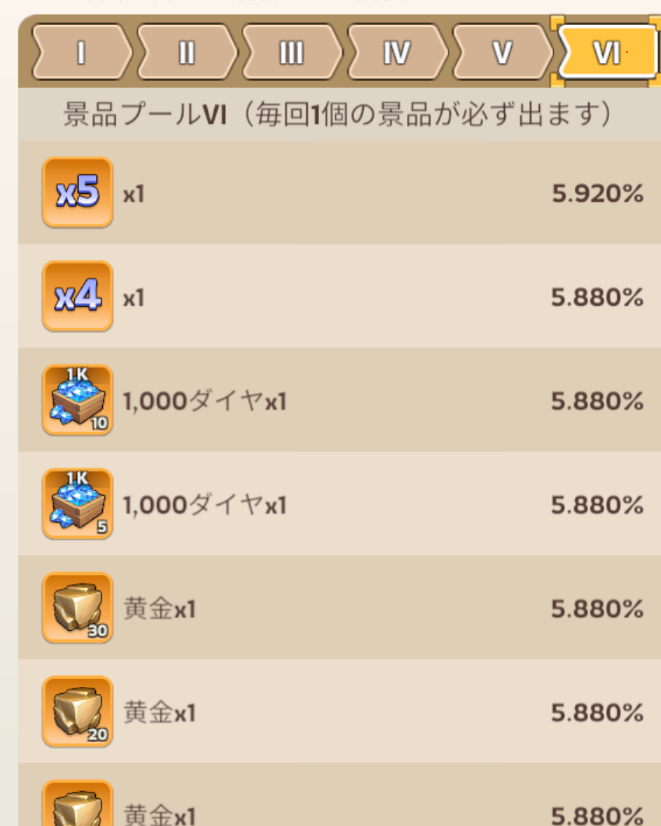
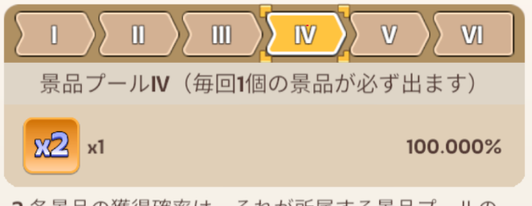
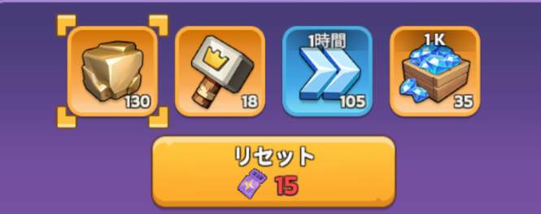

1. はじめに：神秘の占い屋（占いの館）とは？
『Kingshot』で定期開催される「神秘の占い屋（通称：占いの館）」は、一言で言えば「当たり景品だらけのテーブルから、自分で選んだ最高の景品を格安で狙い撃ちできる」屈指の超お得イベントです。
▲ タップでキービジュアルを高画質全画面表示
① 欲しいアイテムを1つ選ぶ
最初に実機仕様の4種（鍛造ハンマー、黄金、汎用加速、ダイヤ）から一番欲しいアイテムを「祈願報酬」に設定。
② 10枚の水晶を開封する
「祈願報酬1個」と「当たりアイテムを含む通常枠9個」で構成。約半数が有用アイテムという有利な状態でスタート。
③ 無料リセットで次へ
見事、祈願報酬を引き当てると無料で次の盤面に進む権利を獲得！このサイクルを最大化するのが目的です。
2. 基本仕様と水晶開封のメカニズム
盤面構成と消費チケット推移
盤面を開けるごとに、次回開封に必要なチケット（水晶）の枚数は段階的に跳ね上がります。以下のテーブルは、現行環境（天井116枚モデル）のコスト仕様です。
| 開封回数 | 必要チケット数 | 累計消費チケット | 特徴・立ち回り上の意味 |
|---|---|---|---|
| 1回目 | 1枚 | 1枚 | 超格安 誰でも引くべき |
| 2回目 | 2枚 | 3枚 | コスパ良好 |
| 3回目 | 4枚 | 7枚 | まだ手頃 |
| 4回目 | 6枚 | 13枚 | 低コスト帯の上限 |
| 5回目 | 8枚 | 21枚 | 分岐点 リセット検討ライン |
| 6回目 | 11枚 | 32枚 | コストが急激に重くなる |
| 7回目 | 15枚 | 47枚 | 完走目的以外は危険 |
| 8回目 | 20枚 | 67枚 | 完走覚悟ゾーン |
| 9回目 | 24枚 | 91枚 | 天井目前（ここでやめるのは絶対NG） |
| 10回目 | 25枚 | 116枚 | 天井確定 祈願報酬 100% 獲得 |
途中手動リセット（6枚）の罠
祈願報酬を引かずに途中でリセットする場合、「リセット費用としてチケット6枚」を没収されます。この6枚の手数料が、リセット戦法の期待値を大きく押し下げます。
連続倍率（2x / 4x / 5x）は加算重複！
Century Games公式FAQ準拠：倍率水晶を連続で引いた場合、効果は乗算ではなく「加算」されます。
（例：2倍 ➔ 4倍 ＝ 6倍（2＋4）、2倍 ➔ 5倍 ＝ 7倍）
3. 確率の真相：均等10%説 vs 重み付き1.790%説
神秘の占い屋の確率に関しては、プレイヤーコミュニティや攻略サイトの間で大きく異なる2つの見解が存在します。客観的事実とゲーム内データからその真相を解剖します。
ゲーム内公式画面・確率＆景品プール全一覧
ゲーム内の「！」アイコンおよび虫眼鏡アイコンから確認できる公式詳細画面です（クリックで拡大表示可能）。






【仮説A】均等残数モデル
大手攻略サイト説10枚の裏にアイテムがあらかじめランダムに配置されており、めくるごとに残数から均等に引かれるとする考え方。
- 1回目：1/10 (10.0%)
- 2回目：1/9 (11.1%)
- 5回目：1/6 (16.7%)
- 10回目：1/1 (100.0%)
【仮説B】重み付き抽選モデル
ゲーム内公式表記説タップした瞬間に各アイテムの「重み（Weight）」に基づいて抽選されるモデル。祈願報酬の基礎ウェイトは極めて低く設定。
- 初回の祈願報酬当選率はわずか 1.790%
- 前半は低ランク報酬が優先的に排出
- 6〜10枚目に向けて条件付き確率が急上昇
- 海外Redditやユーザー実測「後半偏重」と完全に合致
4. 【独自解析】どの戦略が一番お得？期待値の徹底比較
「途中でリセットした方が得なのか？それとも天井まで引くべきか？」
すべてのリセット戦略における景品1個あたりの平均消費チケット数（期待値）を比較検証しました。
| 戦略（当たりが出なければリセット） | 平均消費コスト（旧96枚モデル試算） | 平均消費コスト（現行116枚厳密計算） | 評価・特徴 |
|---|---|---|---|
| 1回目でリセット | 145.0枚 | 約170枚 | 論外 最悪の効率 |
| 2回目でリセット | 70.0枚 | 約85枚 | 極めて非効率 |
| 3回目でリセット | 47.7枚 | 約58枚 | 割高 |
| 4回目でリセット | 35.0枚 | 約43枚 | 改善傾向 |
| 5回目でリセット | 29.2枚 | 36.0枚 | 理論値 計算上の最安値 |
| 6回目でリセット | 29.3枚 | 36.8枚 | 5回目とほぼ同等 |
| 7回目でリセット | 30.9枚 | 38.2枚 | コスト悪化 |
| 8回目でリセット | 31.9枚 | 39.1枚 | 完走した方がマシ |
| 9回目でリセット | 32.3枚 | 39.5枚 | 大損 ここでやめるのは最悪 |
| 天井まで引く（引き切り） | 31.4枚 | 39.8枚 | 総合第1位 圧倒的安定＆高リターン |
「5回目リセット」vs「天井引き切り」わずか数枚差の真実
計算上の最安値（36.0枚）と、天井まで引き切る場合（39.8枚）の差は、わずか【3.8枚】（旧仕様では2.2枚）しかありません。
このたった3〜4枚のために「5回目リセット」を狙うと、以下の2大リスクに直面します：
- 次回無料リセットの権利を自らドブに捨てることになる（手動リセット代6枚の累積）。
- 沼にハマった場合、天井を大幅に超えるチケットを溶かす危険がある。
さらに、ゲーム内表記通りの重み付きモデル（仮説B：1.790%）では、前半で当たる確率が低いため5回リセットのコストはさらに悪化します。したがって、「天井まで引き切る」のが最も賢明かつ安定した王道戦略です！
5. どの課金パックが一番効率いいのか？実質コスト比較
ストアで販売されている課金パックのチケット付与数と、景品獲得期待値を掛け合わせ、「景品1個あたりの実質円建てコスト」を算出しました。
800円 パック
景品1個あたりの実質価格
1,600円 パック
景品1個あたりの実質価格
3,200円 パック
景品1個あたりの実質価格
6. 【実戦編】状況判断で効率を最大化する「ゴリポン流・鉄の掟」
基本は「天井引き切り」ですが、盤面の状況に応じて立ち回りを変えることで、さらに無駄なチケット消費を削ぎ落とせます。
状況①：前半で当たりが出尽くした場合
5枚目までにサブプールの良品（高倍率、加速等）が引け、残りが木材や低ランク素材だけになった場合：
➔ 「5回目手動リセット（6枚）」に切り替え！
ゴミカードのために終盤の高いチケット（15〜25枚）を払うのは愚の骨頂。次の盤面へ進もう。
状況②：倍率カード（2x / 4x / 5x）の明暗
【超大チャンス】祈願報酬の前に倍率が出た！
➔ 迷わず続行！祈願報酬が2〜5倍になる最大のリターン。
【罠！】祈願報酬を引いた後に倍率が残った！
➔ 即座に無料リセット！ 価値の低い通常報酬を倍にするために高額チケットを払うな！
損益分岐点の鉄則：9枚目まで来たら天井直行！
「6〜8回目で倍率カードを空振ったら、未練を捨ててリセットボタン！それがチケット節約の絶対条件！」
「ただし、9回目まで来てしまったら話は別！最初からやり直す（期待値約36枚）より、残り25枚で天井を叩く方が確実に安い！」
7. おすすめ祈願報酬の選び方
神秘の占い屋で選択できる祈願報酬は、実機仕様において【以下の4種類のみ】に限定されています。
進行状況やプレイスタイルに合わせて、最もリターンが大きいアイテムをセットしましょう。

▲ 実機の祈願報酬選択画面（タップで拡大）
| 優先度 | 対象アイテム | 数量 | おすすめ対象プレイヤー | 選定理由・コスパ評価 |
|---|---|---|---|---|
| S+ランク （最優先①） |
鍛造ハンマー （マスターハンマー） |
18個 | 全プレイヤー （特に中盤〜終盤・部隊ステータス重視） |
装備強化・進化に必須の最希少アイテム。他イベントでの入手手段が極めて限られ、全兵種のステータスに永続直結する最高峰リソース！ |
| S+ランク （最優先②） |
黄金 （Truegold / TG資源） |
130個 | 城Lv30到達〜黄金時代のプレイヤー （施設TG化・研究重視） |
役場Lv30以降の「黄金レベル（TG1〜TG5...）」への昇格、強力な「黄金兵士」の訓練、戦争学院（アカデミー）の最先端研究に必須のプレミアム高級資源。終盤最大の育成ボトルネックとなるため、黄金時代突入組にはハンマーと並ぶ最重要選択肢！ |
| A+ランク | 1時間汎用加速 | 105個 （計105時間） |
城育成・重要研究・T5部隊解放を急ぐ発展期プレイヤー | 約4日半（105時間）の時短効果。最強王国（SVS）でのポイント稼ぎや、育成ボトルネックの突破に即効性抜群。 |
| Aランク | ダイヤ箱 （1Kダイヤ×35） |
35,000 ダイヤ |
別イベント（ルーレット等）用にダイヤを備蓄したいプレイヤー | 何にでも使える究極の汎用通貨。ただしダイヤは各種デイリーや報酬でも日常的に獲得可能なため、希少素材（ハンマー・黄金）優先が基本セオリー。 |
💡 ゴリポン先生の報酬選定アドバイス！
「迷ったら【鍛造ハンマー18個】か【黄金130個】の2大巨頭から選べ！
部隊装備を極めて対人戦で圧倒したいなら『ハンマー』、城Lv30以降の黄金レベル（TG）化や黄金兵士・戦争学院研究を爆速で進めたいなら『黄金』が一押しだ！
ダイヤ35,000も豪華に見えるが、これら高級資源をダイヤ換算した場合の実質バリューには遠く及ばないぞ！」
8. よくある質問（FAQ）
Q1. 水晶を押す位置（左上、右下など）で当たりやすさは変わる？
A. 位置による当選確率の差は一切ありません。
内部的にはタップ時の確率抽選、または盤面生成時に重み付け決定されています。好きな場所をタップして楽しんで問題ありません。
Q2. 祈願報酬は本当に後半まで出にくい？
A. プレイヤーの体験談では、後半（6〜10枚目）での獲得報告が多数を占めます。
1.790%の重み付き抽選モデルとも整合するため、「前半で出ないのは普通の挙動」と捉えておくのが精神衛生上も安全です。
Q3. 余った占いチケットは次回イベントに持ち越せる？
A. 完全に持ち越し可能です！
チケットはバッグ（インベントリ）に保持され、次回開催時にもそのまま使えます。「中途半端な枚数なら次回まで温存し、天井分（約100〜116枚）貯まったタイミングで一気に祈願報酬を取り切る」のが最も賢い立ち回りです。
9. まとめ：あなたに合った最適投資戦略
無課金〜微課金
「無料チケットを貯め、天井分（約116枚）揃うまで待機 ➔ 出るまで引き切り」
ドハマりリスクを完全排除し、次回無料リセットの権利を確実に得る。
微課金〜中課金
「800円デイリーパックを毎日買い、当たりが出るまで引き切り」
景品1個あたり約503円という破格のコスパを享受する最善手。高額パックは買わない。
上級理論派
「基本は引き切り。ただし前半で当たりが出尽くしたら5回リセット。9回目まで行ったら天井直行！」
盤面の残存価値と限界コストを見極め、極限のチケット節約を狙う。